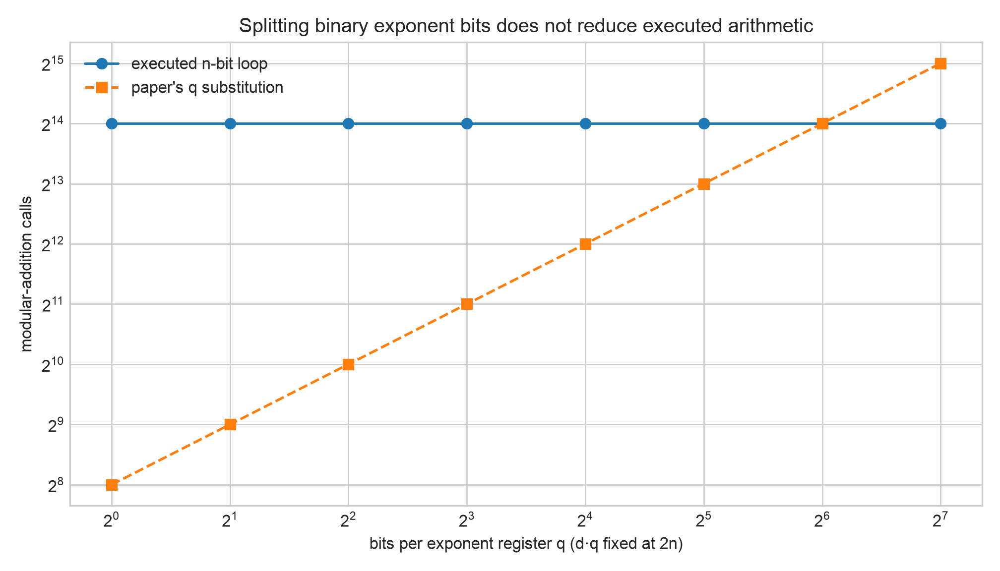
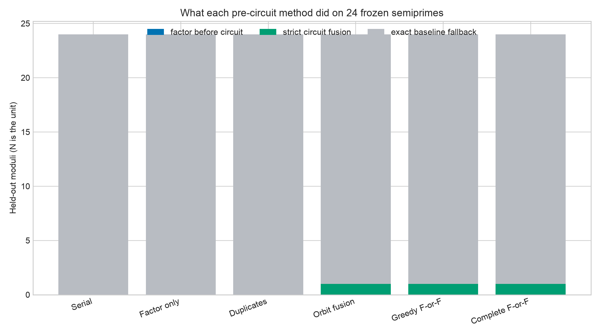
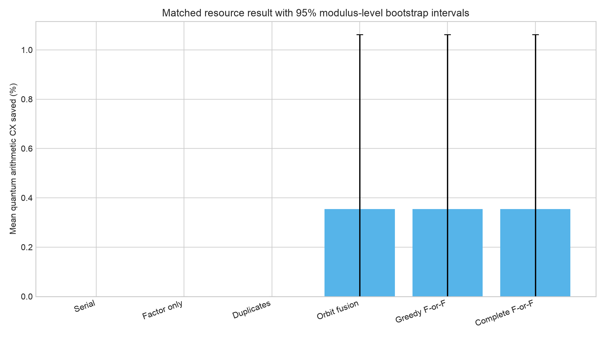

August 3, 2026 - August 9, 2026
Status: In progress
This week I am continuing the direction our professor gave us: determine the constants inside the circuit, study the complexity synthetically, and compare the simulation models instead of relying on one high-level asymptotic expression. The goal is to connect the theorem, the source code, the expanded gates, and the final factor-recovery experiment without pretending that they are interchangeable kinds of evidence.
This has become two connected pieces of work. The first is an independent complexity-fidelity validation of the supplied Regev implementation. The second is a new Factor-or-Fuse study that asks whether dependencies among the chosen modular bases can be used before the quantum circuit is built.
I am testing the circuit-complexity result several ways instead of trusting one counting script. The validation now includes static syntax-tree checks, direct Qiskit gate expansion, exact recursive source-gate counts, dimensional-splitting experiments, compiler optimization comparisons, and negative controls.
The central test holds the total binary exponent schedule fixed at
dq = 2n while changing how those bits are split across registers.
The executed arithmetic does not shrink, because every controlled constant
multiplier still loops over the full n-bit result register. In
other words, shorter-looking exponent registers do not create an
asymptotic saving by themselves; the arithmetic architecture also has to
change.

dq fixed leaves the executed full-width arithmetic
constant, even as the width of each exponent register changes.
The current evidence supports Theta(n3 log n) for
this frozen source implementation, while the associated implementation
analysis reports O(n5/2 log n). I am being careful
with the wording: this is a reproducible paper-to-code discrepancy for the
audited implementation, not a refutation of Regev's theoretical factoring
algorithm and not a physical hardware estimate.
The second part of this week's work asks whether the circuit inputs contain
public algebraic dependencies that should be handled before paying for the
quantum arithmetic. Regev-style inputs store roots bi
and use squared bases ai = bi2
modulo N. If one selected base is a bounded power of another,
the stored roots tell us which of two branches we are in.
+1 or -1, the dependency may be fused into a cheaper exactly equivalent arithmetic oracle, but only when the full reversible cost calculation says it is actually cheaper.
This immediately exposed a benchmark-integrity problem in a familiar toy
input. For N = 15, the advertised bases 4 and
49 are the same residue modulo 15. Their stored roots
2 and 7 reveal the factors 3 and 5 before a quantum
circuit is needed. A nominally two-dimensional example can therefore be
algebraically one-dimensional, which makes it a bad example for claiming
general circuit behavior.
The frozen held-out test is useful precisely because it did not give the exciting answer I initially hoped for. Across 24 unseen semiprimes, the complete method found zero pre-circuit factors, one strictly cheaper exact fusion, and 23 exact-baseline fallbacks. The mean canonical-CX saving was 0.354%, with a 95% modulus-level bootstrap interval from 0% to 1.062%. The preregistered broad-speedup hypothesis did not pass.


I do not see that as a useless result. The method still works as an exact compiler rule when a profitable dependency exists, and it catches toy benchmarks that secretly expose their factors before the circuit. More importantly, the fallback behavior means the preprocessing does not force a worse circuit just to make the method look active.
I am also continuing to compare the finite sampling models under the same LLL endpoint. Week 8 showed that a theorem-consistent noisy-dual generator can recover factors far more often than the finite hard-box, finite-Gaussian, or readout-corruption models. This week I am tightening the interpretation: a synthetic generator is useful for testing post-processing, but it is not automatically evidence for the behavior of the executable quantum circuit.
The comparison needs to keep input distributions, QFT precision, shot counts, arithmetic cost, and recovery criteria visible at the same time. Otherwise it is very easy to compare two numbers that answer different questions.
Week 9 is still in progress. My next steps are to review the complexity-fidelity claim with our advisor, keep the source and protocol hashes frozen, extend the Factor-or-Fuse scaling census, test all bounded witnesses instead of stopping at the first relation, and finish the simulator comparison under matched conventions. I also want the final explanation to preserve the negative results, because reproducibility means documenting when an idea falls back or fails its hypothesis, not only when it produces a dramatic graph.